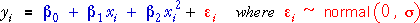
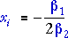
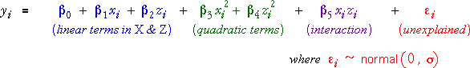

Need for nonlinear models
In experiments with many potential explanatory factors, it is often sufficient to model numerical factors with linear main effects and possibly interaction terms. After a small number of potential explanatory variables have been identified, it becomes feasible to investigate their effect on the response with a more general class of models that allows the explanatory factors to affect the response nonlinearly.
Although many relationships are approximately linear over some range of values of the explanatory factors, most relationships are nonlinear over a wider range of levels of the factors.
Nonlinear models are also required in applications where factor levels are sought to maximise or minimise the response (e.g. to maximise quality or minimise spoilage).
In linear relationships, the maximum or minimum response occurs when factor levels are ± infinity. Only nonlinear models can have a maximum or minimum at finite values for the factors.
Modelling curvature for a single factor
The simplest way to extend the simple linear model for a single numerical factor, X, is with a quadratic term,

The mean response has a maximum if β2 is positive at

If β2 is negative, the mean response is minimum at this value.
Modelling curvature for two factors
In a similar way, the linear model with two numerical factors, X and Z, can be extended with quadratic terms in the two variables. If the model also includes an interaction between between the factors, it becomes a full quadratic model:

The mean response in this model is a quadratic function of x and z that is flexible enough to model a wide range of nonlinear relationships. It defines a 3-dimensional surface.
Flexibility of quadratic models
The diagram below initially shows a model with only linear terms in the two factors, X and Z.
The quadratic model has enough flexibility to model most relationships.